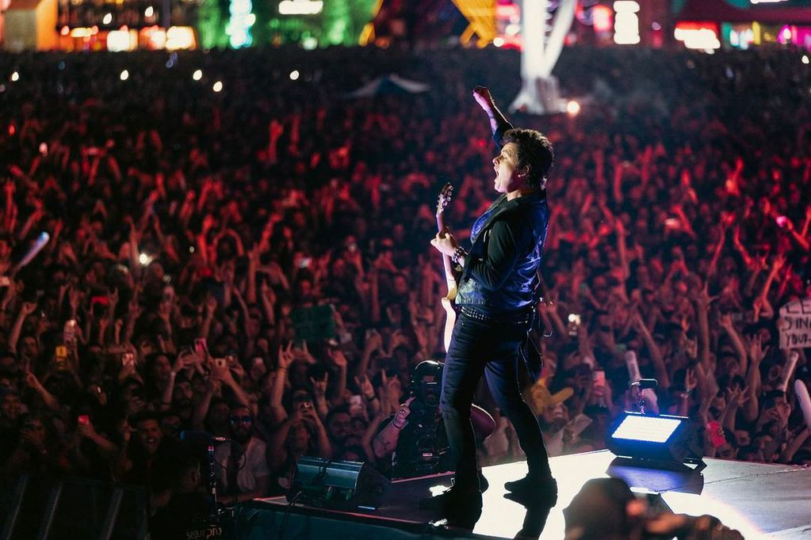

Noticias
Aquí encontrarás las noticias de las bandas que vendrán a Aregentina.
Green Day hizo vibrar a Argentina en una noche a puro punk rock
Green Day es una de las bandas preferidas de los y las argentinas? Sin pruebas pero tampoco dudas cualquier persona que haya asistido este domingo 11 de septiembre al estadio José Amalfitani podría afirmar rotundamente que sí. Fuegos artificiales, pogos, fiesta, llamaradas y covers de bandas legendarias. Con un estadio colmado y entradas agotadas desde meses atrás, finalmente el trío californiano regresó a la Argentina por cuarta vez en su historia después de su última visita, cinco años atrás.
Green Day visita a Argentina nota del cronista

Coldplay reconfirmó sus shows en la Argentina y habilitará entradas “low cost”
Para tranquilidad de los fanáticos argentinos, la banda británica confirmó que hará los diez shows que tenía planeados en nuestro país a partir del martes 25; saldrán a la venta tickets por 2800 pesos. Dos semanas después de que Coldplay cancelara sus shows en Brasil debido a un problema de salud de Chris Martin –fueron reprogramados para marzo de 2023–, algo que generó gran preocupación en los fanáticos argentinos que esperaban con ansias ver a la banda, el grupo británico confirmó que los diez conciertos en Argentina siguen en pie. Coldplay se presentará en el Estadio River Plate los días 25, 26, 28 y 29 de octubre, y el 1°, 2, 4, 5, 7 y 8 de noviembre, en una seguidilla de conciertos impactante. Con más de 550.000 entradas vendidas, el grupo inglés alcanzó un nuevo récord: es la banda con más cantidad de conciertos en el Monumental, destronando a Roger Waters y a su muro (realizó nueve conciertos). La banda también confirmó que sus conciertos del viernes 28 y sábado 29 serán transmitidos a todo el mundo; en nuestro país podrán ser vistos en vivo en salas de los complejos Hoyts, Cinépolis y Cinemark.
Coldplay visita Argentina nota del cronista
Guns N´Roses maravillados por el público argentino
La banda compartió en sus redes sociales un video de su show en River y celebró el entusiasmo de la audiencia local. Fue su primer recital en el país tras cinco años. Guns N' Roses pasó por Argentina una vez más y dejó en éxtasis a sus miles de fans, que este viernes disfrutaron de un show de casi tres horas repleto de clásicos, en el estadio de River. No obstante, pese a su paso fugaz por Buenos Aires, una vez más el fervor del público argentino quedó grabado a fuego en los artistas que, más allá de sus años de experiencia, siguen sorprendiéndose por el "agite" de los rockeros locales.
"¡Qué público increíble!": los Guns N' Roses se rindieron ante los fans argentinos